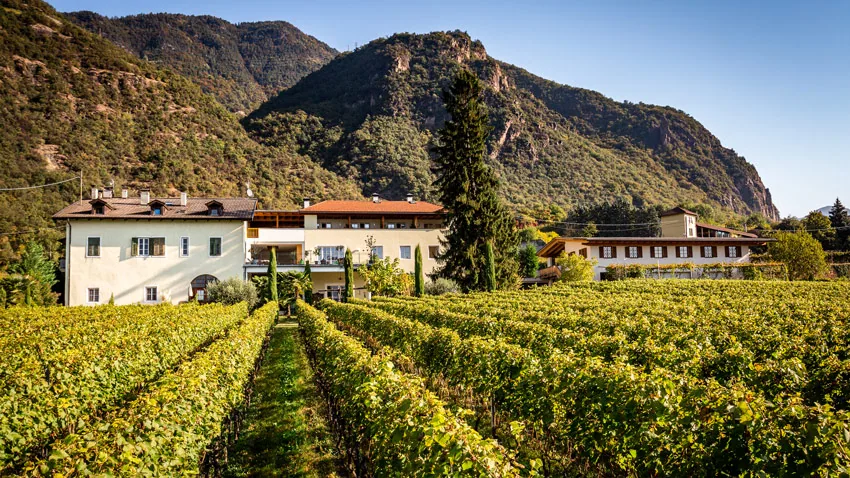
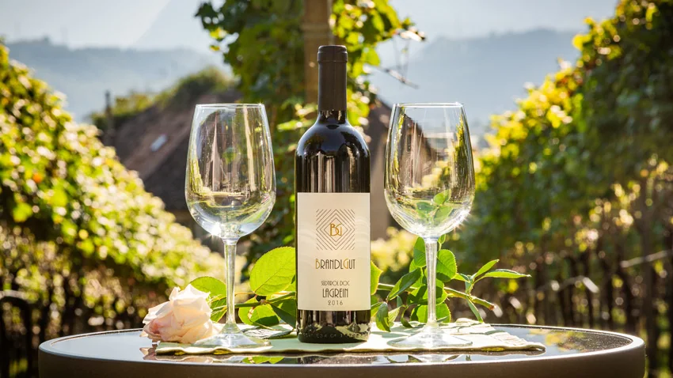
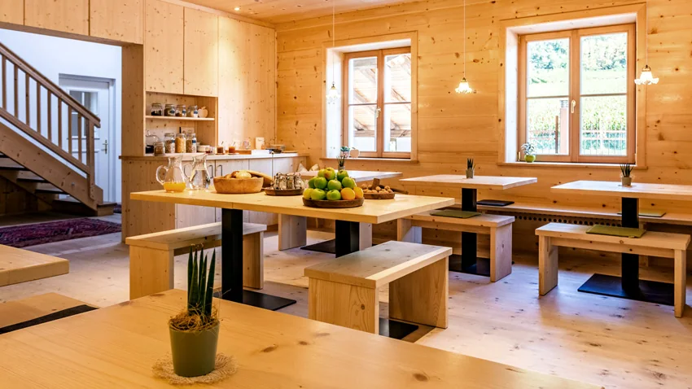
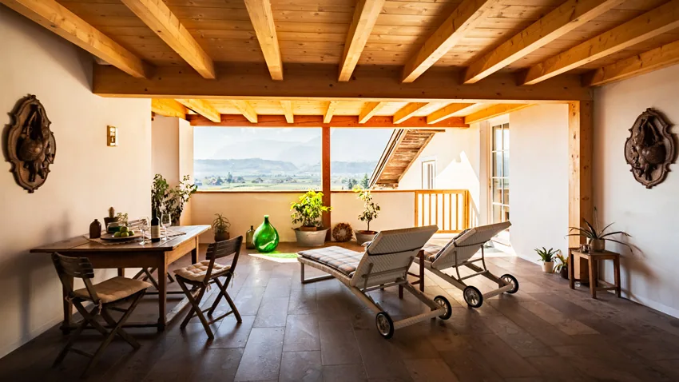

Maso e vino
Il nostro maso
Il maso Brandlgut fu costruito nel XIX secolo e dal 2006 è gestito dalla nostra famiglia. Dopo alcuni anni di ristrutturazione, dal luglio 2016 accogliamo ospiti tutto l’anno.


Vino e orto
Su due ettari in posizione privilegiata cresce l’uva del nostro Lagrein. Una piccola parte del maso è dedicata a frutta e verdura – mele, pere, ciliegie, cetrioli, zucche – per i nostri ospiti e per noi.
Volete saperne di più sul lavoro del viticoltore? Chiedeteci pure: vi mostriamo volentieri il maso.

Colazione
Nella sala colazioni, costruita interamente in legno di abete, la giornata comincia con caffè, pane fresco, prelibatezze locali e le uova delle nostre galline. È qui che amiamo chiacchierare con i nostri ospiti.

Terrazza e prato
La grande terrazza comune e il prato offrono un’ampia vista sulla valle. I bambini hanno tanto spazio per giocare, un angolo giochi con sabbiera e una grande altalena – e chi ama giocare con i cani adorerà Thila e Mira.
Impressioni dal maso
Quando possiamo accogliervi?
La richiesta non è vincolante – vi rispondiamo al più presto.
Invia richiesta